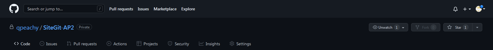
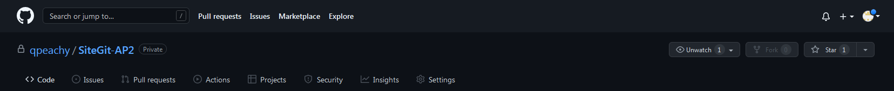

Menu Github
Voici la presentation des différents menu git (exemple sur projet SiteGite-AP2)
Voici la presentation des différents menu git (exemple sur projet SiteGite-AP2)
Cette rebrique permet à repertorier,rendre visible(aux personnes autorisés) et modifiable les différents éléments du dossier étant été git push
Cette rubrique permet à tracker des idées, commentaire, tâches ou bugs sur son travail
Cette rubrique permet de commit des changement sur son projet et utiliser les pull request pour collaborer avec autruis
Cette rebrique permet à automatiser, customiser et executer le flux de developpement de son logiciel
Cette rebrique permet la création d'un tableur personnalisé qui contient un suivie de toutes les changements éffectuer au project en accord avec les issues et pull request
Cette rebrique permet de voir toutes les politiques de sécurité, autres avertissements et fonctions de sécurité
Cete rebrique apporte des données sur l'activité, les contributions et dependances du projet
Cette rebrique donne accès au paramètres généraux du dossier